柔鱼渔场预报新突破内容
柔鱼是全球重要的渔业资源之一，其渔场分布受多种海洋环境因子影响，具有显著的时空动态变化特征。传统预报方法依赖大型服务器，数据传输与处理耗时长，难以满足远洋渔船的实时预报需求
‘敖芯1.0’基于国产自主AI芯片，结合边缘计算技术，实现了柔鱼渔场的远端实时预报。通过深度学习模型和多环境因子耦合分析，我们为远洋渔业提供了一套高效、精准的解决方案。
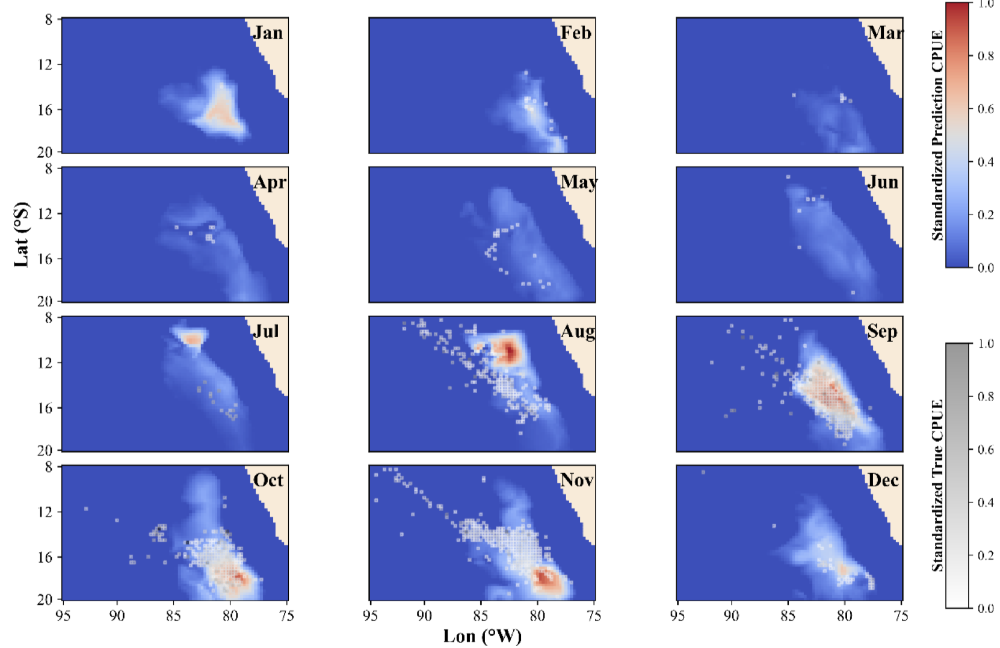
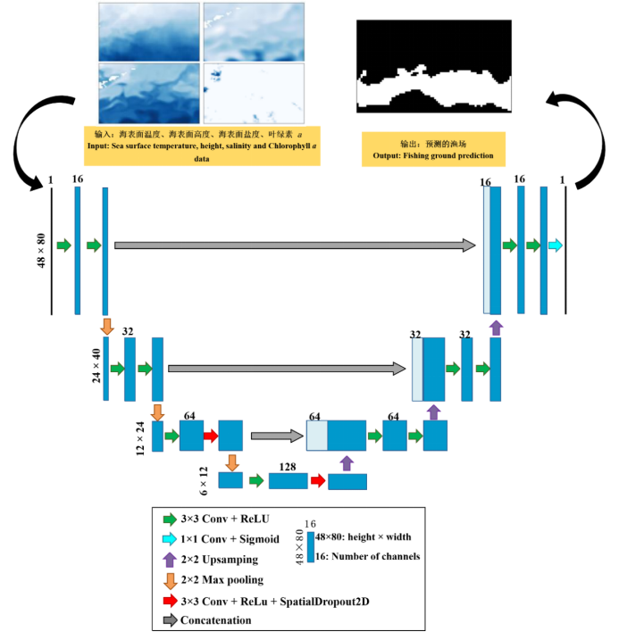
技术赋能，创新引领内容
国产AI芯片部署：“我们采用华为昇腾Atlas200IDKA2开发者套件，其峰值算力达4TFLOPs（FP16）/8TOPs（INT8），净重仅330g，不仅算力强大，还具备低功耗、高便携性。国产芯片的使用保障了技术自主可控，避免了国际局势波动带来的供应风险。”深度学习模型优化：“通过NAS遗传算法，我们构建了轻量化模型，显著降低了计算成本。在保持F1分数几乎不变的情况下，FLOPS下降了80%左右。混合精度训练和多种迁移策略的结合，进一步优化了模型的性能。”
多环境因子耦合分析：“柔鱼的分布受海表面温度（SST）、叶绿素a浓度（Chl-a）、海表面盐度（SSS）和海表面高度（SSH）等多种环境因子影响。我们通过实验验证，确定了SST和Chl-a的最佳组合，为精准预测提供了科学依据。”
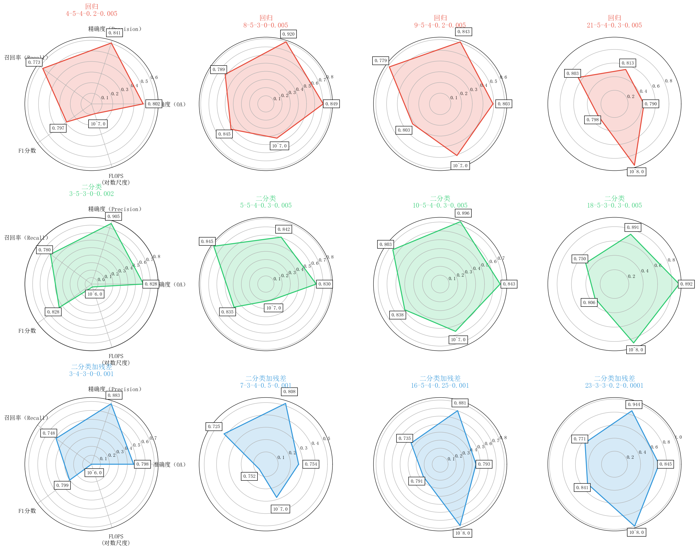
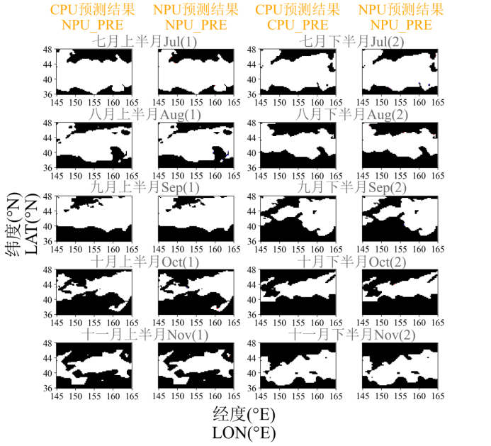
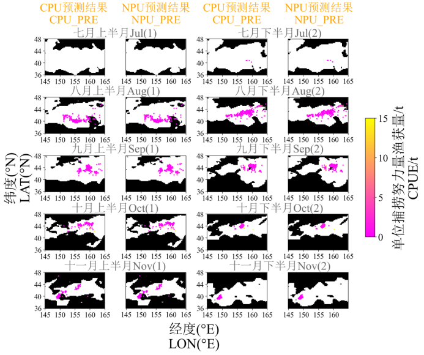
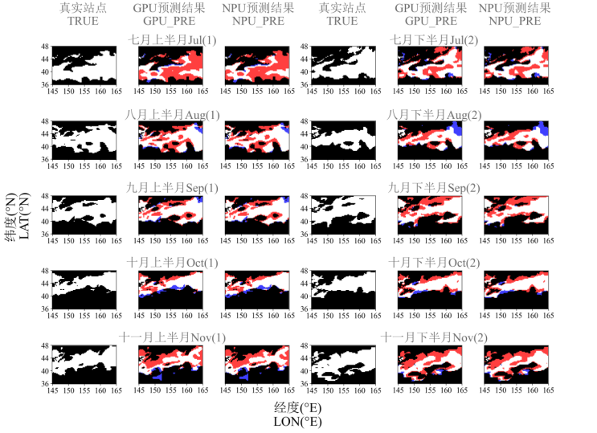
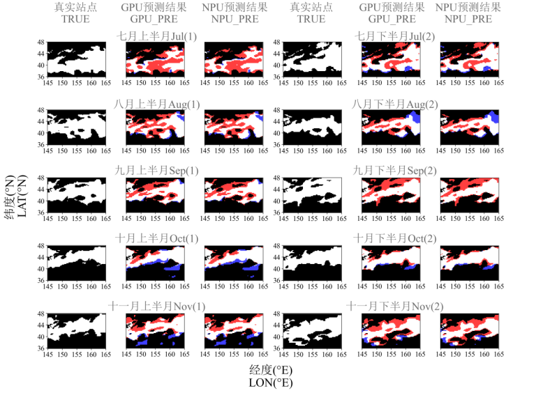
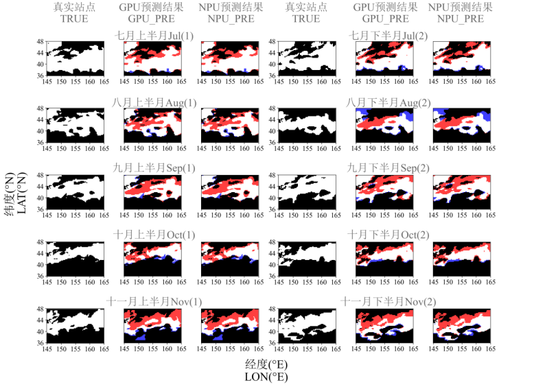
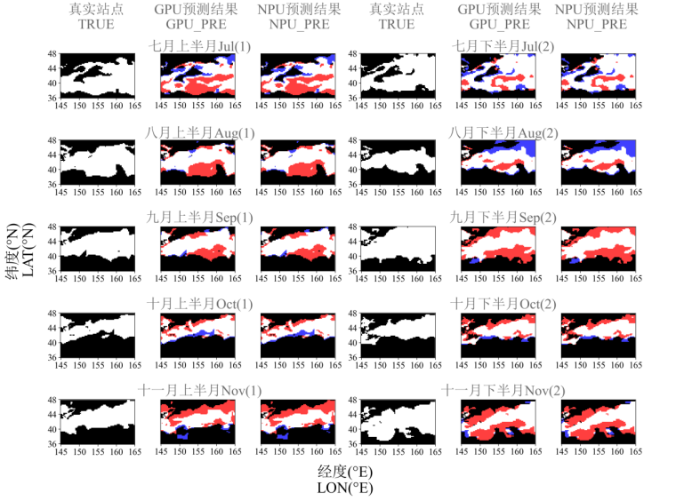
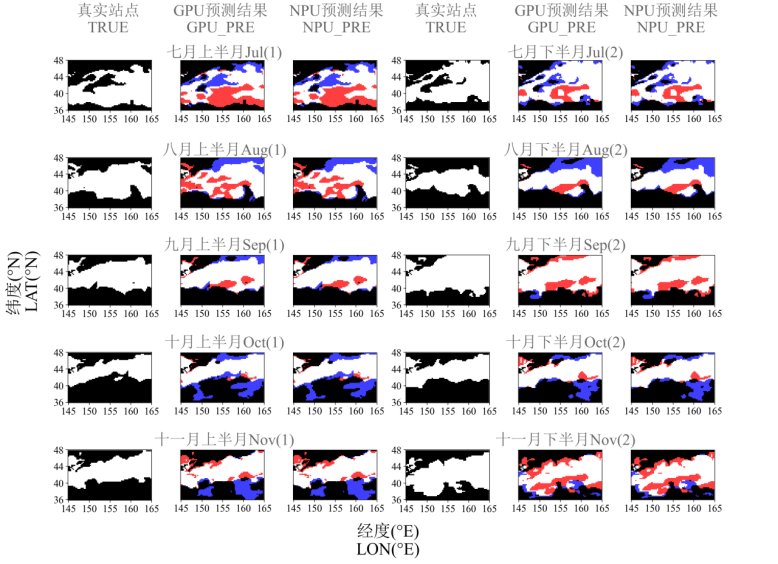
海上实测，成果斐然内容
研究团队在西北太平洋柔鱼渔场开展了多次海上实测验证工作，通过远洋渔船搭载相关设备，系统验证了模型的精度、平台的稳定性和硬件的适应性。实验结果表明，‘敖芯1.0’的各项核心指标均达到预期目标。
核心指标：
模型精度：R²指数提升至0.5-0.6，预测结果与实际渔场分布高度一致。
平台稳定性：系统运行稳定，无数据丢失或中断现象。
硬件适应性：边缘计算设备在海上恶劣环境下表现出色，适应性强。
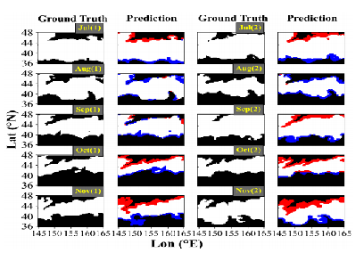
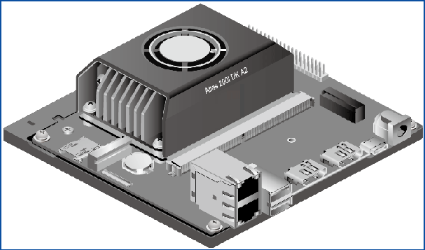